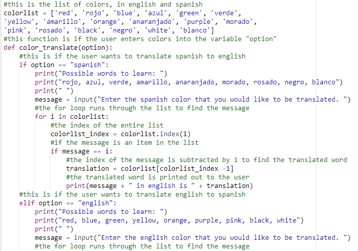
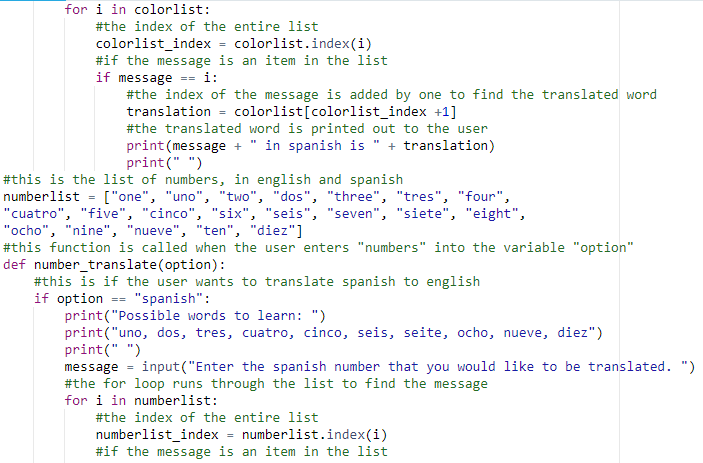
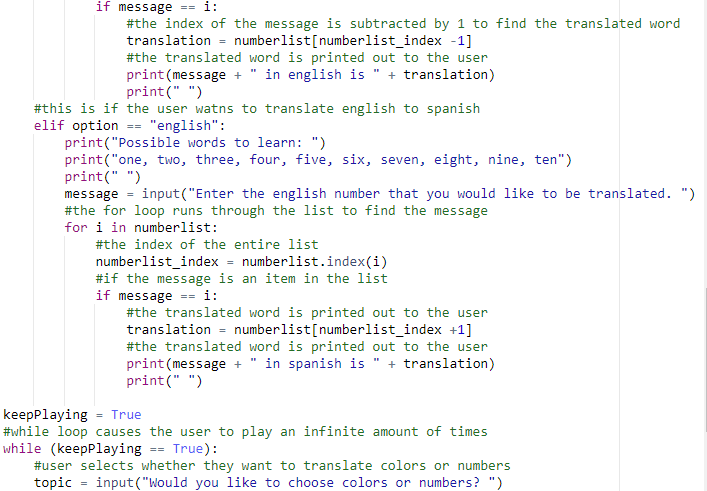
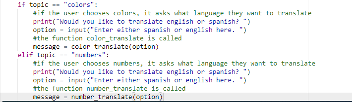

This project was created as part of my AP exam. I was tasked with creating a python program that uses lists, procedures, conditionals, etc..
Program purpose:
This program will first ask the user whether they want to translate spanish to english or english to spanish. Then, The user will enter a word based on the list of words provided. The program will take that input and use the index to display the translated word to the user.
In this program, I was required to implement all of the skills that I have learned during this course. I was required to create a list. Also, I needed to create a procedure consisting of many different components. This includes using parameters, a conditional (if statement) and an iteration (for loop).
-The lists used were colorlist and numberlist.
-The parameter used was "option".
   